Ela como uma garota muito bonita e que chama a atenção de muitos homens e mulheres, e eu não fiquei de fora fui mais um que caiu na beleza dela e que seja o ultimokkkk.
Como posso descrever o que eu sinto por ela se mal consigo expressar só com palavras e demonstrações de carinho. Então decidir criar esse site com o que eu aprendi ate agora e mostrar a voce como eu te vejo com os meus olhos.
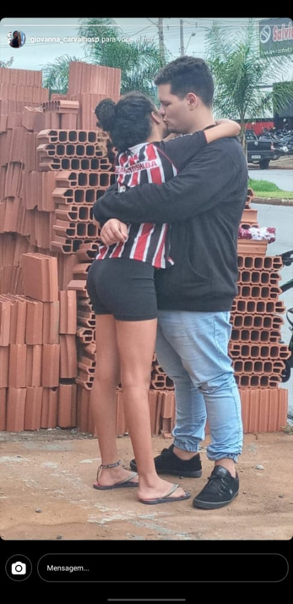
Nesse dia meu coração estava quase saindo pela boca de tão ansioso que eu estava para te ver.
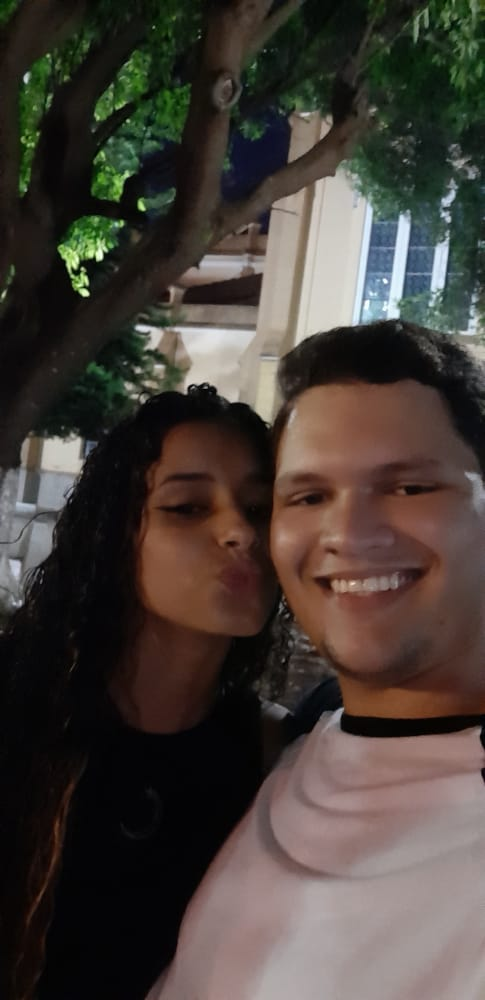
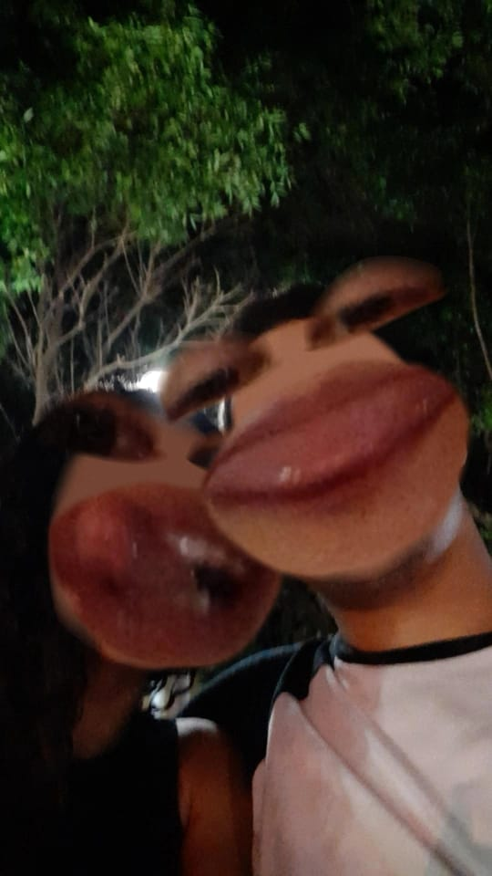
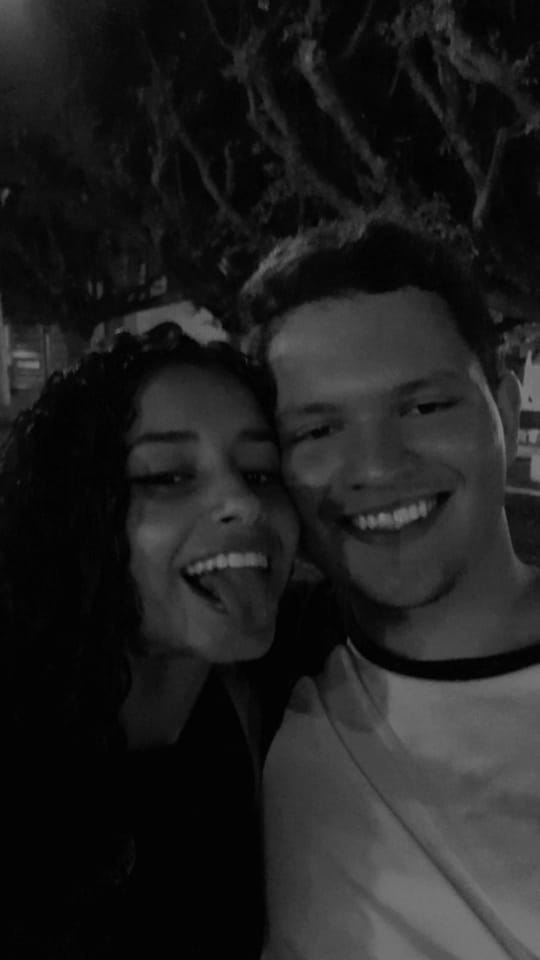
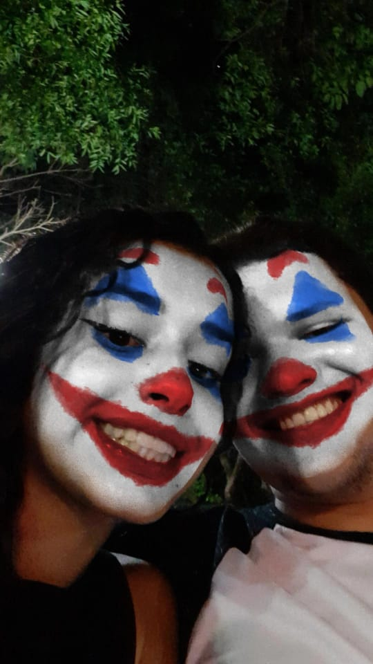
A primeira vez que saimos, nossa esse dia foi espetacular para mim quando eu pude ter um tempo a sos com voce, a gente se divertiu muito que eu consigo lembrar ate hoje o velho falando da mae da Grazikkkk.
A melhor parte do meu dia é quando eu posso te ver ou conversar com voce e princialmente as fotos que voce me manda.
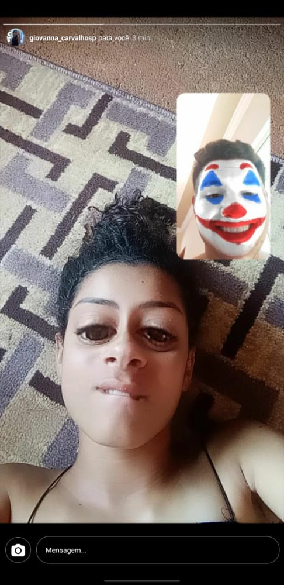
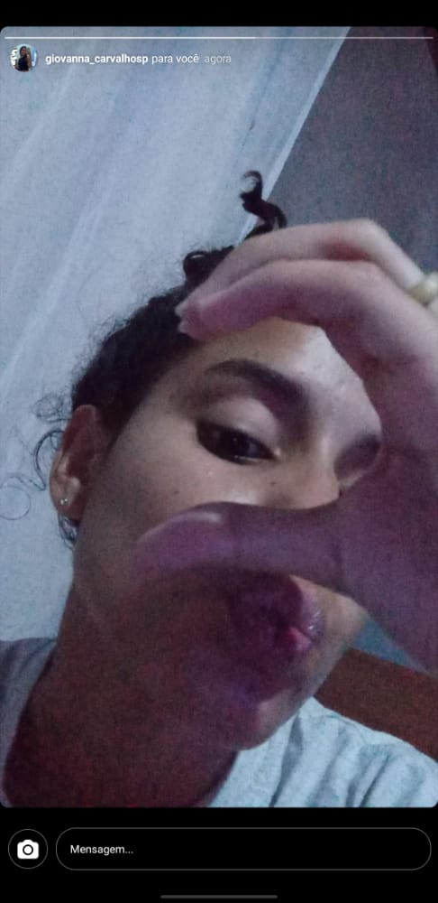
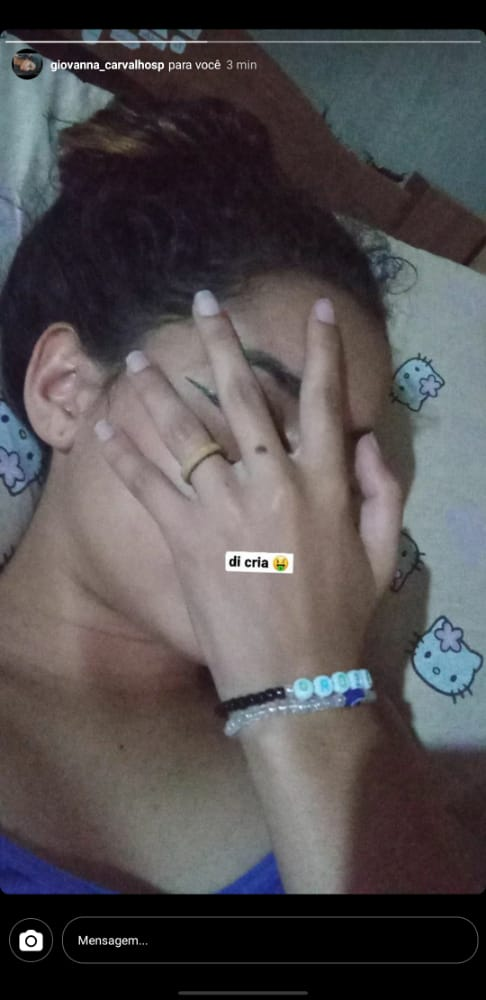
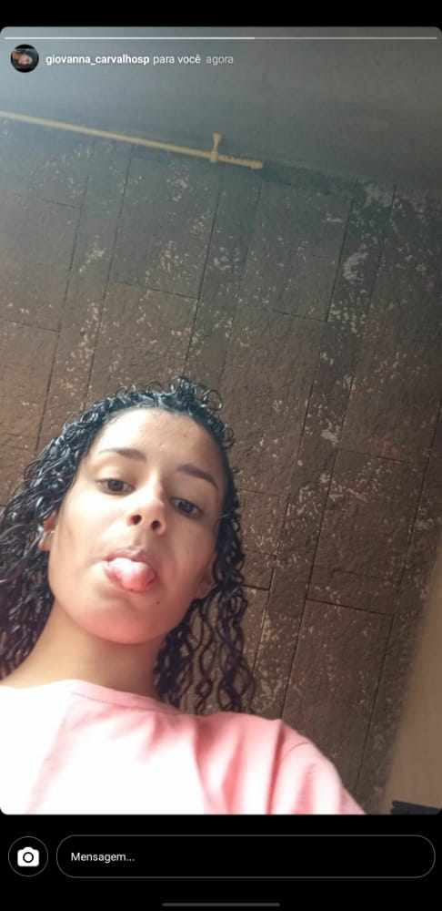
Nesses momentos em que voce me manda essas fotos eu me sinto unico por ter voce e por ver voce mesmo nos momentos que nao esta arrumada, esses são os momentos unicos pra mim no meu dia.
Voce e tao linda, perfeita que as vezes eu penso como consegui alguem como voce na minha vida. Voce é a pessoa com quem eu quero passar o resto da minha vida, Eu Te Amo.
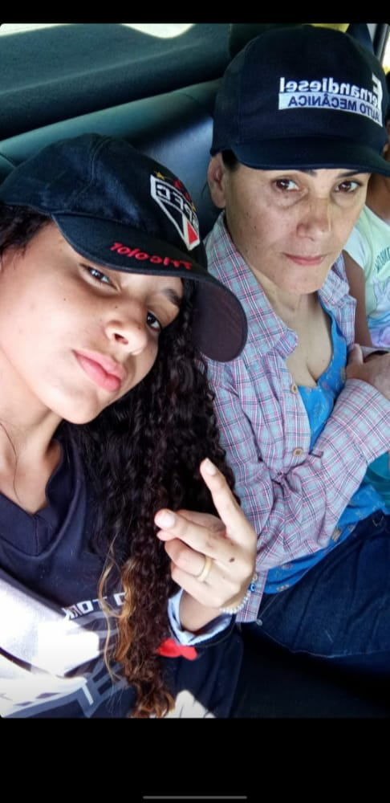🤢
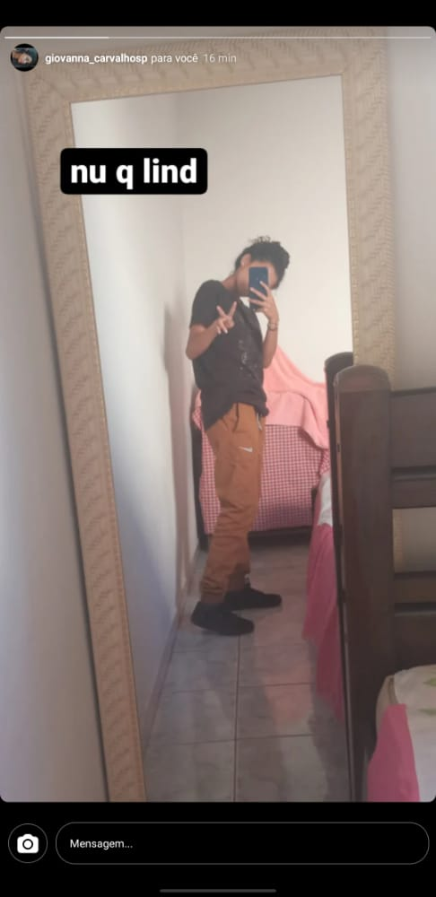 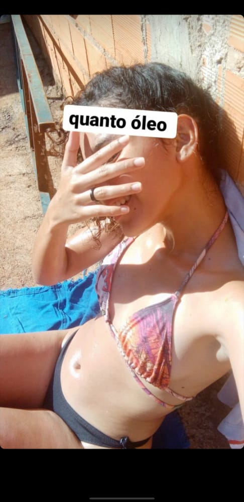
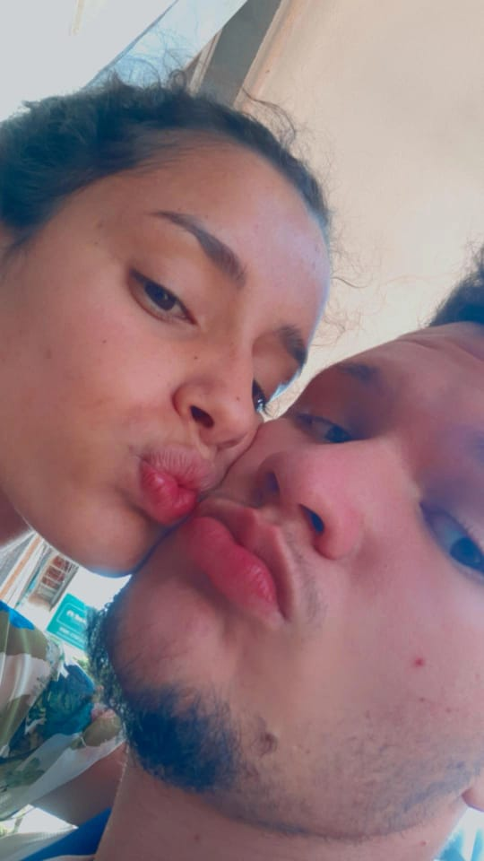
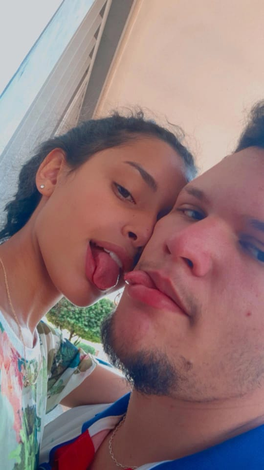
OBS: Isso porque era pra ser so uma ficadakkkk
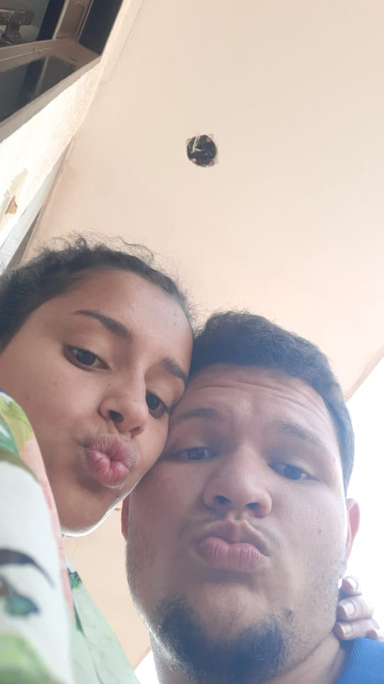
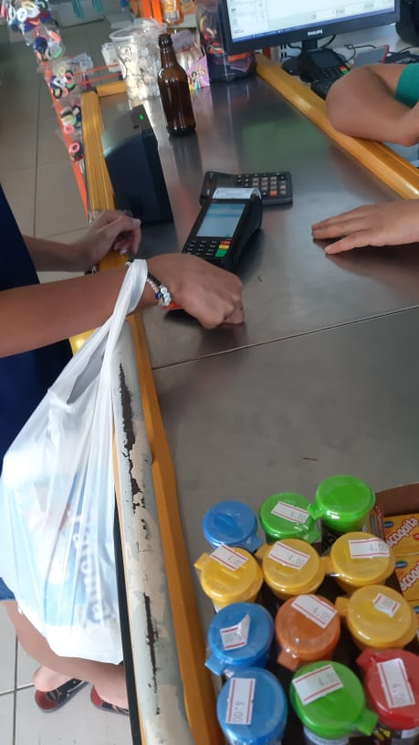
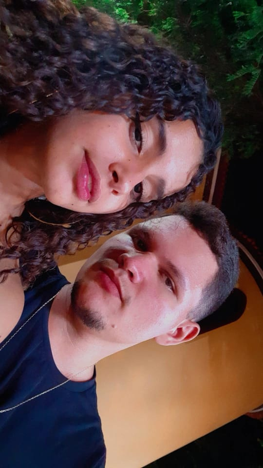
EU TE AMO MUITO MEU PAUN DI AIO